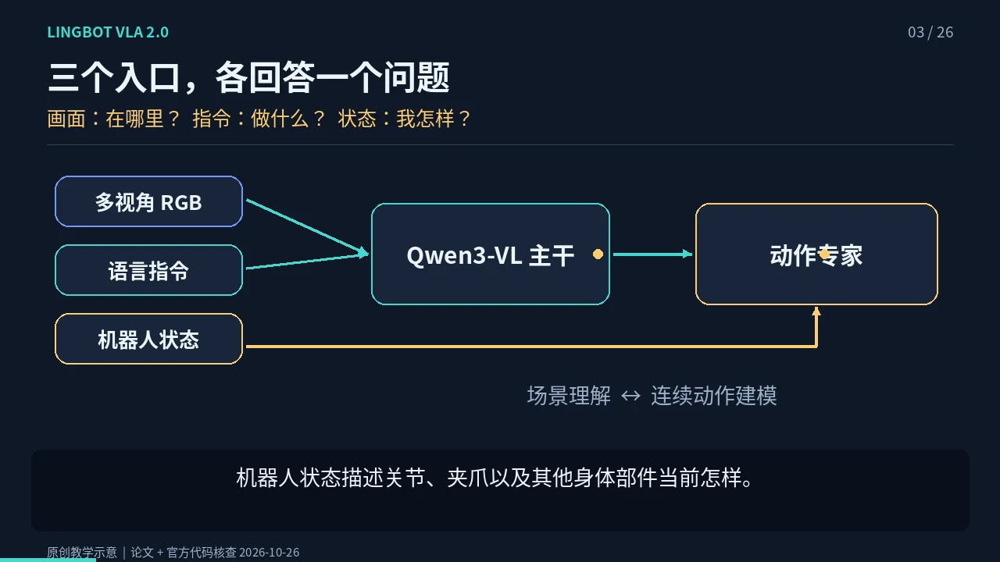
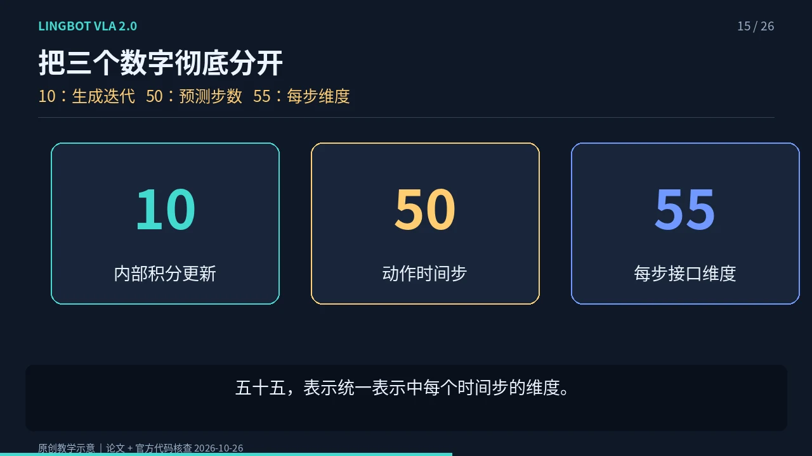
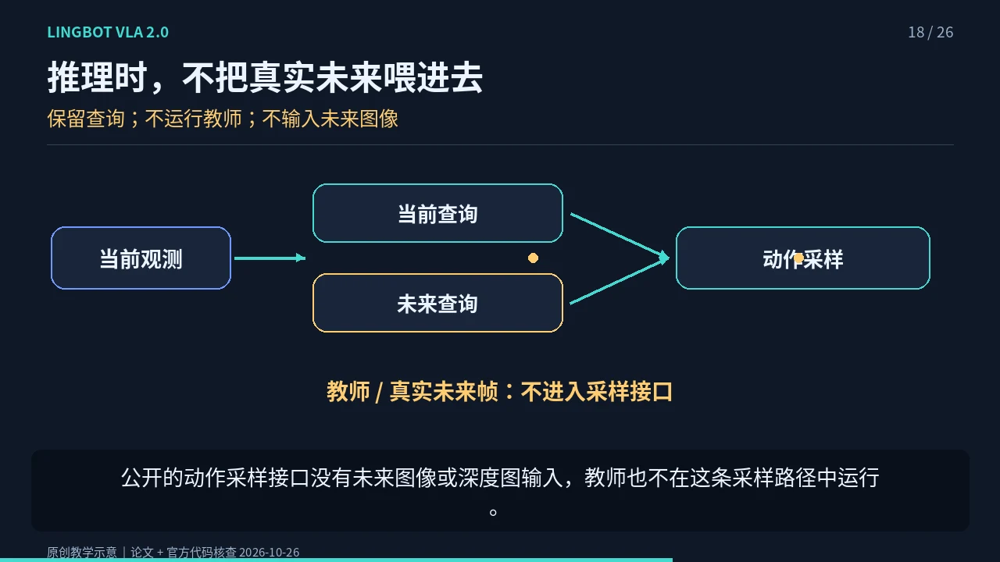
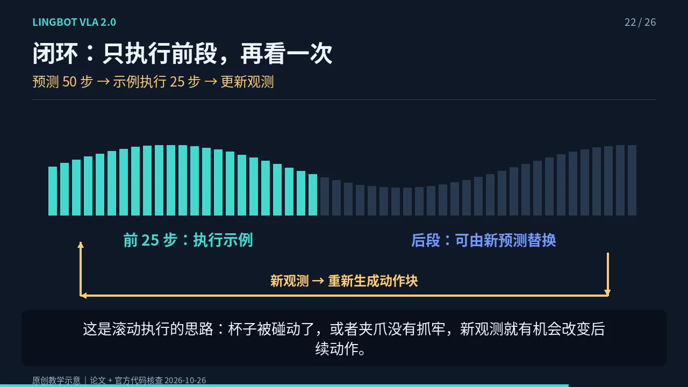

NOTE 09 / 具身模型 · 动画教学
LingBot-VLA 2.0：
从看懂指令到连续动作
一句「把杯子放到托盘上」，怎样变成一小段机器人动作？先用动画抓住整体，再把注意力、MoE、Flow Matching 和训练监督放回同一条数据流。
范围与版本。这是 LingBot-VLA 2.0，不是 LingBot-VA。本片是原创示意动画与中文合成旁白，不是官方实机录像，也不证明任何特定机器人或线束任务已验证成功。机制核查截至 2026-10-26；论文和固定代码见文末。
1. 先看视频，再按章节回看
展开 26 个视频章节
点击定位到对应章节；不会强制播放，可自行按播放键。无脚本时仍可使用视频进度条。
2. 把一次推理连成完整链路
当前多视角 RGB、语言指令、机器人状态 → 条件动作生成 → 反归一化与字段映射 → 执行前段 → 更新观测。图像回答「现场有什么」，语言回答「要做什么」，状态回答「身体现在怎样」。它不是把自然语言直接翻译成一段电机程序。

当前代码使用 Qwen3-VL-4B-Instruct 作为视觉语言主干，动作专家采用独立的 Transformer 层与连续动作输出。一个负责可迁移的多模态上下文，一个处理带噪动作和时间条件；但它们并非完全隔离，注意力把两条信息流连接起来。
3. 联合注意力与 MoE 各做什么
每层中，两条流分别生成查询、键和值，再进入联合注意力。动作流因此能从当前场景和指令中取信息。注意力有方向：视觉语言前缀不能偷看动作后缀，同一动作块内部则可以双向交流，协调一段运动。
MoE 在动作专家的前馈网络里。当前公开配置有 32 个路由专家，每个 token 选择 4 个，另有共享专家。它用稀疏激活增加容量，并不是让 32 个完整机器人投票；也不能给每个专家预先贴上「左手」「抓杯」等技能标签。具体分工由训练形成。
4. Flow Matching：从噪声到动作
可以把噪声看成一份杂乱的动作草稿。训练时有示范动作 a，也有高斯噪声 ε，随机选一个时刻把两者混合：
目标速度 u(t) = ε − a
模型在图像、语言和状态的条件下，学习混合动作所在位置的变化方向。当前时间约定中，t = 1 是噪声，t = 0 是示范动作。训练比较预测速度与目标速度；fm 和 L1_fm 的误差形式不同，当前 RoboTwin 示例用后者。
推理没有示范答案，从随机噪声开始，默认做 10 次欧拉更新：
x(t + Δt) = x(t) + Δt · vθ(x(t), t | 图像, 指令, 状态)
负时间步把轨迹从 1 推向 0。视觉语言前缀的 KV 可以先计算并缓存，后续迭代动作流。随机动作只存在于计算内部，机器人不会先实际乱动再整理。
5. 10、50、55，三个不同的轴

55 维统一接口由手臂关节 14、双末端位姿 14、夹爪 2、灵巧手 12、腰 4、头 2、底盘 3，以及预留 4 维组成。它不是说机器人有 55 个物理关节，也不是每台机器人都使用全部字段。缺失部件可填充，有效维度用掩码计入动作损失，字段顺序和映射要查对应机器人配置。
默认动作块包含 50 个时间步，但这不是固定的几秒：物理时间取决于数据与控制频率。10 次积分迭代只是生成计算次数，也不等于机器人执行 10 步。
6. 训练有教师，运行没有真实未来
二点零在图像和文本后加入学习到的当前、未来感知查询。训练时，LingBot-Depth 提供几何表征，DINO-Video 提供时间相关的视觉表征，查询通过蒸馏学习这些信息。这种辅助任务让动作学习不只盯着输出误差，也获得空间和变化趋势的监督。

公开的 sample_actions 接口输入当前 RGB、语言、状态等，不需要真实未来图像或深度图。教师不在动作采样路径中运行，学习到的查询仍然保留；当前 YAML 允许动作流关注未来查询。不能把「不用教师」误解为「训练成果全部丢弃」，也不能误解为模型提前看到了真实未来。
7. 动作如何走到真实机器人
生成的动作通常处于归一化空间，下发前必须反归一化，再映射为目标机器人使用的关节、夹爪或其他字段。控制器负责执行，部署系统负责限位、碰撞检查、时延管理、急停与人工接管。VLA 不能代替这些安全边界。

执行一段后重新观测，才能让物体位移或抓取失败影响下一次预测。这是滚动闭环的价值，但闭环本身不保证成功。基础模型迁移到新的本体、夹具或任务，仍需要数据映射、任务适配和实机验证；不是接上机器人就能稳定插接线束。
8. 从三处入口读源码
- 输入怎么准备：看机器人配置中的图像、状态、动作字段映射，以及归一化统计。
- 损失怎么计算：在主模型中定位流匹配目标、有效维度掩码与辅助蒸馏；不要把不同配置的损失当成唯一方案。
- 动作怎么执行：从
sample_actions追到部署 policy，检查反归一化、动作截取与重新预测的触发条件。
学习顺序建议：先复述输入到执行的主线，再看 Flow Matching 的时间方向，最后逐层查看注意力与教师监督。已有运动学基础，可以搭配正运动学笔记理解动作字段，再用完整抓取时序检查模型外的系统责任。
9. 来源与实现边界
论文 v1 为 2026-07-07。代码核查固定在提交 be969b8fd117fb70550c5d4bf4bc328211b5b1b6，避免把后续变动静默混入本文。
- 官方论文：From Foundation to Application
- 官方仓库与版本说明
- 主模型：联合注意力、训练与 sample_actions
- 动作块与积分次数的默认配置
- RoboTwin 后训练 YAML
- 实机后训练 YAML
- 训练教师构造
- 部署 policy：截取动作和重新预测
论文不等于每一份后训练配置。论文描述 loss-free MoE 负载均衡；当前公开后训练 YAML 使用 sequence auxiliary loss 与 router z-loss。部分未来查询屏蔽开关与旧文档示例不同。本文讲机制时标明论文，讲运行路径时以固定提交的实现为准。
动画中的轨迹和机器人均为教学示意。保留官方来源便于核查，不暗示本片由官方制作或背书。完整逐字讲稿与视频章节可在本页上方下载。